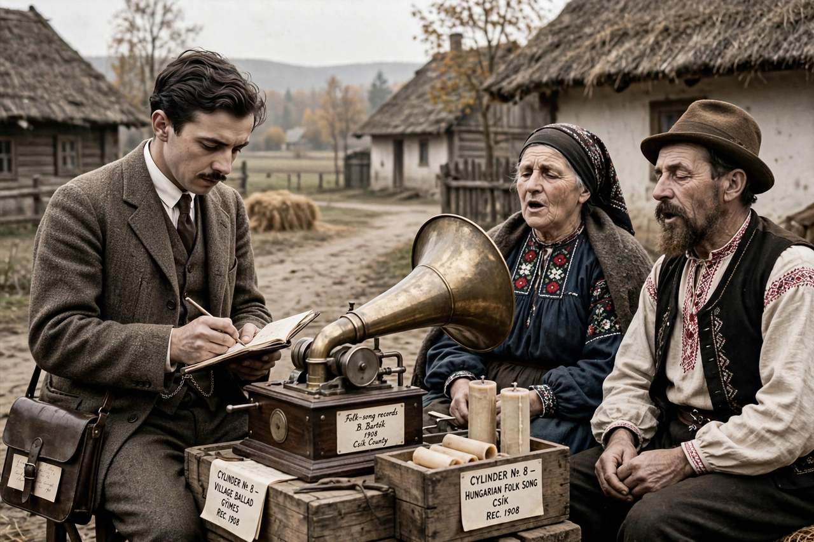

| Béla Bartók | |
| Born | 25 March 1881, Nagyszentmiklós, Kingdom of Hungary |
|---|---|
| Died | 26 September 1945 (aged 64), New York City, U.S. |
| Occupations | Composer, pianist, ethnomusicologist |
| Known for | Concerto for Orchestra; six string quartets; folk music research |
| Works | Bluebeard's Castle; The Miraculous Mandarin; Music for Strings, Percussion and Celesta; Mikrokosmos |

Béla Viktor János Bartók (25 March 1881 – 26 September 1945) was a Hungarian composer, pianist and ethnomusicologist. He is considered one of the most important composers of the 20th century; his synthesis of folk music and modernist technique places him alongside Igor Stravinsky and Arnold Schoenberg as a founder of musical modernism.
Bartók was born in Nagyszentmiklós in the Kingdom of Hungary (now Sânnicolau Mare, Romania). He studied piano and composition at the Royal Academy of Music in Budapest, where he later taught piano from 1907 to 1934. Refusing to compromise with the authoritarian and Nazi-aligned Hungarian regime, he emigrated to the United States in 1940. He died of leukaemia in New York in 1945, in comparative poverty, shortly after completing some of his most celebrated works.
With Zoltán Kodály, Bartók travelled through Hungary, Slovakia, Romania, Bulgaria, Turkey and North Africa recording thousands of peasant songs on phonograph cylinders. He published major collections of Hungarian, Romanian and Slovak folk music and helped establish comparative musicology — the field now called ethnomusicology. The modes, irregular rhythms and melodic shapes of this material permeate his compositions.
Bartók's major works include the opera Bluebeard's Castle (1911), the ballet The Miraculous Mandarin, Music for Strings, Percussion and Celesta (1936), the six string quartets, three piano concertos, the Concerto for Orchestra (1943, commissioned by Serge Koussevitzky), and Mikrokosmos, a graded set of 153 piano pieces. His style features driving rhythms, folk-derived modes, and an "axis system" of tonal organisation.